Happy Ram Navmi From: Shashank
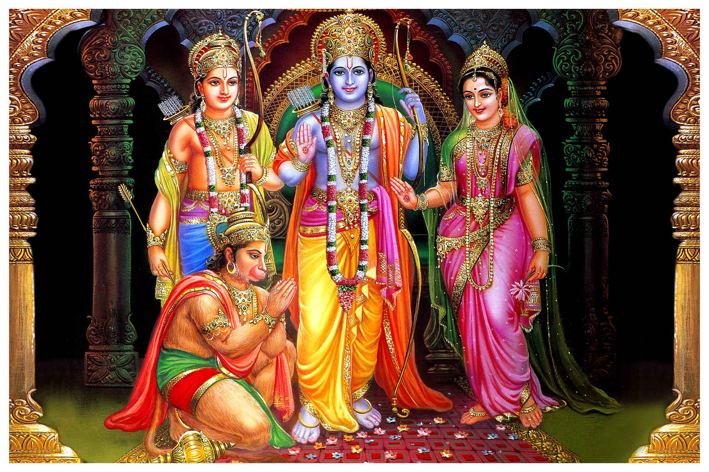
Teachings we can learn from Shree Ram
Honesty and integrity: Lord Rama was honest and upright in his words and deeds. He never lied or cheated anyone. He was loyal and faithful to his wife Sita, his brother Lakshmana, his friends and allies. He showed us how to be truthful and trustworthy in our relationships and dealings
Honour your word: Lord Rama honoured his father’s promise to his stepmother Kaikeyi and went to exile for 14 years without any complaint. He showed us the importance of keeping our word and fulfilling our duty
Self-control and detachment: Lord Rama had control over his senses and emotions. He was not attached to worldly pleasures or possessions. He renounced his kingdom and lived a simple life in the forest. He was content and peaceful in any situation. He showed us how to be free from desires and attachments that cause suffering
Follow righteousness: Lord Rama followed dharma, or righteousness, in all aspects of his life. He never deviated from the path of truth and justice. He fought against evil and protected the innocent. He showed us how to live according to our conscience and principles
Courage and strength: Lord Rama demonstrated great courage and strength, both physical and mental, throughout his life. He faced many challenges and obstacles with bravery and confidence. He never gave up or lost hope. He showed us how to overcome our fears and difficulties with determination and faith
Love and respect for all: Lord Rama treated everyone with love and respect, regardless of their social status or background. He was kind and compassionate to animals, sages, friends and foes alike. He showed us how to value every living being and treat them with dignity and care
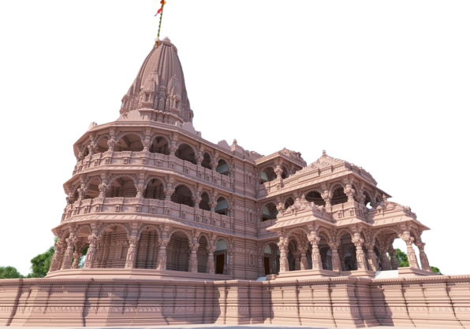
Lord Rama's story can be divided into six phases of his life with important events as follows:
1. Childhood and Youth:
Lord Rama was born as the eldest son of King Dasharatha and Queen Kausalya in Ayodhya¹. He was trained by sage Vashishtha and Vishwamitra in various arts and sciences². He married Sita, the daughter of King Janaka, after breaking the bow of Shiva in a contest¹.
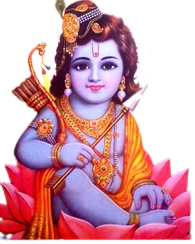
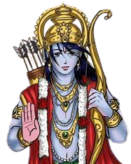
2. Exile and Abduction:
Lord Rama was exiled for 14 years by his stepmother Kaikeyi, who wanted her son Bharata to be the king¹. He was accompanied by Sita and his brother Lakshmana. During their exile, they met many sages, allies and enemies. They also killed many demons, including Ravana's sister Surpanakha and brother Khara¹. Sita was abducted by Ravana, the king of Lanka, who wanted to marry her¹.
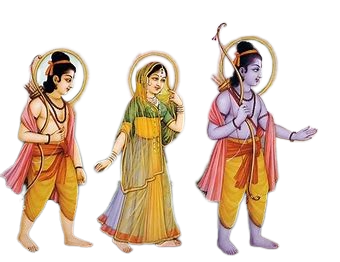
3. Search and Alliance:
Lord Rama searched for Sita with the help of Hanuman, the leader of the monkey army¹. He also formed an alliance with Sugriva, the king of monkeys, and Vibhishana, the brother of Ravana who defected to his side¹. He crossed the ocean by building a bridge with the help of Nala and Nila, two monkey architects¹.
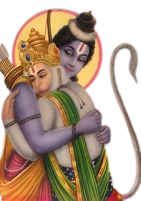
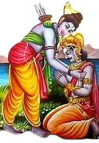
4. War and Victory:
Lord Rama fought a fierce war with Ravana and his army for 10 days¹. He killed many warriors, including Ravana's son Indrajit and brother Kumbhakarna¹. He finally killed Ravana with the Brahmastra, a divine weapon given by sage Agastya¹. He rescued Sita and crowned Vibhishana as the new king of Lanka¹.
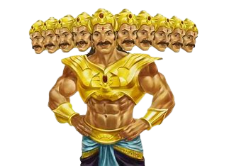
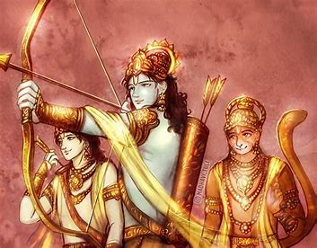
5. Return and Coronation:
Lord Rama returned to Ayodhya with Sita, Lakshmana and Hanuman after completing his exile¹. He was welcomed by Bharata, who had refused to take the throne and had kept Rama's sandals as a symbol of his authority¹. He was coronated as the king of Ayodhya and ruled with justice and righteousness¹.
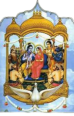
6. Later Life and Departure:
Lord Rama faced a dilemma when a washerman questioned Sita's chastity after her captivity in Lanka¹. He decided to send Sita to the forest, where she gave birth to twin sons Lava and Kusha under the care of sage Valmiki¹. He later met them when they recited the Ramayana, composed by Valmiki, in his court¹. He reconciled with Sita, who returned to the earth as an act of final testimony¹. He ruled for 11,000 years before departing to his eternal abode along with his brothers².
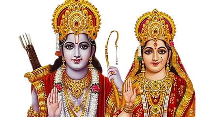